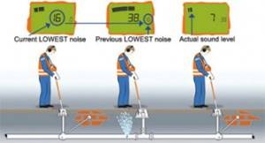
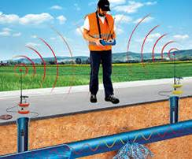

Nowadays water damage claims are on the rise due to faulty plumbing materials, failed connections, human error and burst pipes.
Water damage claims more than doubling both fire and break-ins combined , you should consider a complete water leak detection device to protect your home and your belongings.
Leak detection system can actually shut off the water when the system senses an excess flow of water beyond a pre-set limit.
Water leak monitoring in buildings with sensitive electric and electronic equipment or valuables is today an elementary part of building supervision and guarding.
linear water leak detector operates using time-domain reflectrometry. A short pulse (less than 1 millionth of a second) is sent down the cable. When a leak is detected, a return pulse is generated (effectively the pulse sent out by the controller “bounces” off the leak) to send back an alarm.
